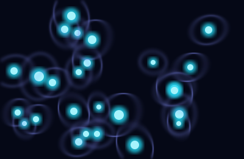
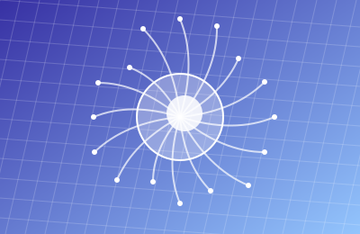
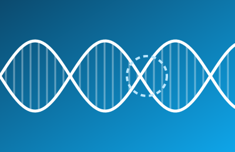

Alex Morgan
Biomedical Engineer · Tissue Engineering & Cell Biology
I'm a research scientist at Example Institute for Bioengineering, where I engineer living tissues and build tools to see, measure and steer how cells behave.
I did my PhD at University of Somewhere, advised by Prof. Jane Doe, and my undergrad at Institute of Technology. I've interned at Example Biotech and Marine Biology Lab.

News
- Nov 2026 Two papers accepted in Nature Biotechnology and Cell.
- Sep 2026 Invited talk at the Gordon Research Conference on Biomaterials.
- Jul 2026 Live-Cell Segmentation received an Rising Star Award from BMES.
- Mar 2026 Joined Example Institute for Bioengineering as a Research Scientist.
Research
I'm interested in tissue engineering, mechanobiology, and quantitative cell imaging. Most of my research is about building human-relevant models of disease, from organoids on chips to computational tools that read cells under the microscope. Representative papers are highlighted.
Nature Biomedical Engineering, 2026 (Cover Article)
Patient-derived liver organoids grown on a microfluidic chip predict drug toxicity better than 2D culture or animal models.

Nature Methods, 2026 (Rising Star Award)
A self-supervised segmentation model that tracks single cells across days of time-lapse fluorescence imaging.

PNAS, 2026
Tuning hydrogel stiffness steers mesenchymal stem cells toward bone or fat lineages through YAP signaling.

Science Advances, 2025
A paper-strip Cas12 assay that detects viral RNA in 20 minutes with no lab equipment.
Cell Systems, 2025
Protein language models fine-tuned on directed-evolution data design enzymes with 8× higher activity.
Service & Teaching
- Editorial Board, Biomaterials; Program Committee, BMES 2026
- Reviewer, Nature BME, Cell Stem Cell, Lab on a Chip, PNAS
- Teaching Assistant, BME 210: Cell & Tissue Engineering, 2022